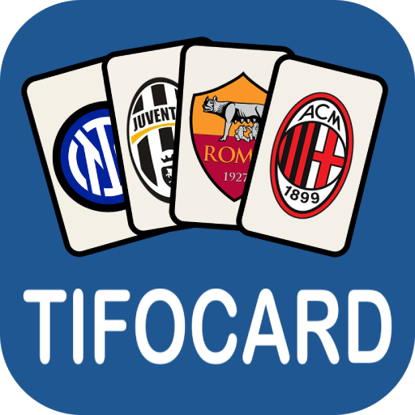

TifoCard
TifoCard – Klondike Solitaire with the Emblems of the Biggest Italian Clubs
TifoCard is a classic Klondike solitaire game with a unique football twist - instead of the standard card symbols (hearts, spades, clubs, diamonds), we used the emblems of the most famous Italian football clubs! This game brings a nostalgic, but also exciting experience for all fans of solitaire and football.
Key Features:
- Authentic Klondike solitaire mechanics – Play the classic version of solitaire with recognizable card stacking rules.
- Emblems of Italian clubs - Enjoy cards with the symbols of the most famous teams from Italy.
- Immerse yourself in the atmosphere of a real football match.
- Drag and drop cards easily, with a smooth and fluid interface adapted to all devices.
- No Internet - Enjoy the game anytime, anywhere, without the need for an Internet connection!
Who is TifoCard for?
This game is the perfect match for anyone who loves football and classic card games. Whether you are a passionate fan of Italian clubs or simply looking for a fun way to spend your free time, TifoCard will provide you with hours of enjoyment and strategy.
How to play?
- Move the cards according to the rules of Klondike solitaire - arrange them alternately by color and order.
- Unleash the aces and form four stacks of cards in order from smallest to largest.
- Use assist moves and backtracking to win in the shortest possible time.
- Enjoy football motifs and the legendary atmosphere of football stadiums.
Why play TifoCard?
- Adapted for all ages - easy to understand and fun.
- It brings football spirit to the classic solitaire game.
- It allows relaxation and at the same time develops logical thinking.
Download TifoCard now and play solitaire with the soccer spirit of Italy!